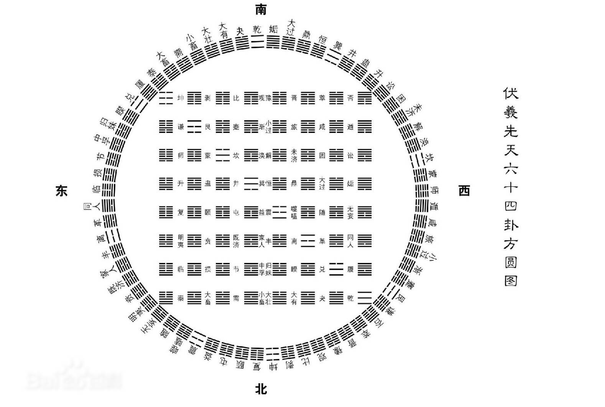

🔔 文中内容，多数摘录自南怀瑾先生的《易经杂说》。
书不尽言，言不尽意。自觉圣智，完成人格。 – 南怀瑾
洁净精微
“洁净精微，易教也。”
“洁净”包括了宗教的、哲学的含义，也就是说学了《易经》，他的心理、思想、情绪无论在任何情况下，都会非常宁静，澄洁。“精微”两字则是科学的，是无比的细密精确，所以学《易》的人，要头脑非常冷静。
三易
何为三易？《连山易》、《归藏易》和《周易》。
《连山易》是神农时代的《易》，所画八卦的先后位置，和《周易》的八卦位置是不一样的。黄帝时代的《易》为《归藏易》。《连山易》以艮卦开始，《归藏易》以坤卦开始，到了《周易》则以乾卦开始，这是三易的不同之处。
《易经》的三原则
《易经》三大原则：变易、简易和不易。
变易
第一，所谓变易，是《易经》告诉我们，世界上的事，世界上的人，乃至宇宙万物，没有一样东西是不变的。在时、空当中，没有一事、没有一物、没有一情况、没有一思想是不变的，不可能不变，一定要变的。时间不同，环境不同，情感亦不同，万事万物，随时随地，都在变中，非变不可，没有不变的事物。
印度佛学中的“无常”，是一种佛理，意思是世界上没有一种东西能永恒存在的，和《易经》中的变易有异曲同工之妙。中华文化中的《易经》，是讲原则，宇宙中的万事万物，没有不变的，非变不可，这是原则。印度人则是就现象而言，见现象有感，遂而名之为“无常”。
简易
第二简易，也是最高的原则，宇宙间无论如何奥秘的事物，当我们的智慧够了，了解它以后，就变得很平常，很平凡而且非常简单。这就是把复杂的道理，予以简化，所以叫作简易。那么，《易经》首先告诉我们宇宙间的事物无时不变，尽管变得法则及其复杂，宇宙万事万物再错综复杂得现象，在我们懂了原理、原则以后，就非常简单了。
不易
第三不易，万事万物随时随地都在变得，可是却有一项永远不变的东西存在，就是能变出来万象的那个东西却是不变的，那是永恒存在的。它能变万有、万物、万事，永远不变。
理、象、数
《易经》的三个法则（内涵）：理、象、数。
理是属于哲学的，宇宙间万事万物既都有它的理，也必有它的象；反过来说，宇宙间任何一个现象，也一定有它的理，同时每个现象，又一定有它的数。万事万物都有它的理、它的象和它的数。《易经》的每一卦、每一爻、每一点，都包含有理、象、数三种涵义在内。人处在世界上，与这个世界的关系，不停地在变，只要发生了变，便包含了它的理、象、数。人的智慧如果懂了事物的理、象、数，就会知道这事物的变，每个现象，到了一定的数，一定会变，为什么会变，有它的道理，完全明白了这些，就万事通达了。理、象、数通了，就能知变、通、达，万事前知了。
卦与八卦
什么叫作卦？卦就是挂起来的现象，八卦就是告诉我们宇宙间有八个东西，这个东西的现象挂出来，就是八卦。
| 卦 | ||
|---|---|---|
| ☰ | 乾 | 天 |
| ☷ | 坤 | 地 |
| ☲ | 离 | 日、火 |
| ☵ | 坎 | 月、水 |
| ☳ | 震 | 雷 |
| ☴ | 巽 | 风 |
| ☶ | 艮 | 山 |
| ☱ | 兑 | 泽 |
乾为天，坤为地，☰ 、☷ 这两个符号代表了时间、空间、宇宙。天地以内，日月旋转，遂生雷风。雷风相薄，雷动为风，风卷成雷。山泽。
在宇宙间，除了这八个大现象以外，没有九个，已不能七个，只有八个卦，而且都是对立的。
先天八卦
天地定位。山泽通气。雷风相薄。水火不相射。八卦相错。 – 《说卦传》
什么叫 “先天” ？以哲学的观点说，宇宙万物没有形成以前，即是所谓的先天，有了宇宙万物，那就是 “后天” 了。无为先天，有为后天。先天、后天，只是一种代号的作用，以逻辑来说，这只是一种界说，用以划分出阶段范围而已。
字是写的，卦是画的，所以我们叫作画卦。卦的图案，每个卦都有三画，我们成为三卦画，卦中的画叫 “爻” 。爻者，交也。为什么“爻”就是交？这是说明卦在告诉我们，宇宙间万事万物，时时都在交流，不停地发生关系，引起变化，所以叫作“爻”。
大象无形，不能拘泥。
乾、坤、离、坎四个大卦，挂在那里大家都看得见的，就是天、地、日、月四个大象。
天上云动，以为 ☳ ，震为雷。天下云卷，以为 ☴ ，巽为风。雷电震动以后，阳变为阴，阴变成阳，就变成了巽，气流摩擦，又发生雷电，这两个不断地互相转化。这两个卦的位置相对，名为“对宫卦”。古人说“宫”，就是位置、方位。同样，艮 ☶ 的对宫卦兑 ☱ 。
其次要注意的，是先天八卦图的“数”，乃依据八卦排列的秩序产生的。“数”在《易经》里是很奇妙的，人们在遇到不如意的事之后，往往认为这些事的发生，是有定数的。
乾一 → 兑二 → 离三 → 震四，此为 顺 。巽五 → 坎六 → 艮七 → 八坤，必为 逆 。九在中央。
| 兑二 | 乾一 | 巽五 |
| 离三 | 九中 | 坎六 |
| 震四 | 坤八 | 艮七 |
乾三连，坤六断，震仰盂，艮覆碗，离中虚，坎中满，兑上缺，巽下断。
这八个大卦，是古人告诉我们，天地间就是这八大现象在变化，这些图案都是相对的。
后天八卦
假使学《易经》学到需要在某一方面应用，而且用得有功效，就要特别研究后天八卦了。“先天八卦”等于是表明宇宙形成的那个大现象，“后天八卦”是说明宇宙以内的变化和运用的法则。
一数坎兮二数坤，三震四巽数中分，五寄中宫六乾是，七兑八艮九离门。
| 巽四 | 离九 | 坤二 |
| 震三 | 五中 | 兑七 |
| 艮八 | 坎一 | 乾六 |
监本《易经》
《易经》为什么不容易看懂？因为对象、数方面没有基本的认识，所以必须把《易经》的象认识清楚。宋以后的《易经》注解，多数是走物理的路线，就是用儒家的学术思想来解释《易经》，明以后《易经》监本，是明朝以后那些儒家采用了朱熹的思想编的。故《易经》的理不必太偏重它，但并不是不重视。譬如乾卦，朱熹认为是那样，我们亦可以认为是这样，各有各的理，正理只有一条，歪理可有千条。而《易》的象与数，却是科学的，没有办法讲歪的，就非要学会它的规矩、法则，才能懂得《易经》。
六十四卦的来源
《易》的象、数，该如何开始学起？从中国学术史上看，唐宋以前，还没有分宫卦象次序，宋以后，才把这个次序列出来。这个次序的排列，是有一定道理的，是由每一卦变化出了八个卦，八个卦变成六十四卦。
先天卦，有三爻，名三爻卦，是伏羲画的卦，亦是中国有文字的开始。后来人类社会越发展，人事越复杂，三爻卦已经不够用，就变成了六爻卦。后天卦统统是六爻的图案，这六爻卦是很精细的，亦是很科学的。
为什么要用六爻？因为一直到现代的科学时代为止，宇宙间的事情、物理，没有超过六个阶段的。一切的变，只能变到第六个阶段，第七个变是另外一个局面开始。孔子在《系传》中说六爻的道理是：“六爻之动，三极之道也。”什么是“三极”？就是天地人三才。三才有阴阳相对，三二就得六，这是孔老夫子的心得报告，几千年来，没有脱离他的范围。
要注意，画八卦是从下面画起。那《易经》的卦为什么要这样画？第一个道理，天下的事情发生变动，都是从下面开始变，换言之是从基层变起；第二个道理，《易经》的卦，原来只是三爻，后来变成六爻，名称上就有了分别：下面三爻的卦为 内卦 ，上面三爻的卦为 外卦 ，内外两卦相连起来。自下面开始画卦，亦说明了宇宙事物的变。一切东西都是从内变开始，所以画卦是由下往上，由内而外。
物必自腐，然后虫生。
#+CAPTION: 分宫卦象次序
| 乾为天 | 天风姤 | 天山遁 | 天地否 | 风地观 | 山地剥 | 火地晋 | 火天大有 |
| 坎为水 | 水泽节 | 水雷屯 | 水火既济 | 泽火革 | 雷火丰 | 地火明夷 | 地水师 |
| 艮为山 | 山火贲 | 山天大畜 | 山泽损 | 火泽睽 | 天泽履 | 风泽中孚 | 风山渐 |
| 震为雷 | 雷地豫 | 雷水解 | 雷风恒 | 地风升 | 水风井 | 泽风大过 | 泽雷随 |
| 巽为风 | 风天小畜 | 风火家人 | 风雷益 | 天雷无妄 | 火雷噬嗑 | 山雷颐 | 山风蛊 |
| 离为火 | 火山旅 | 火风鼎 | 火水未济 | 山水蒙 | 风水涣 | 天水讼 | 天火同人 |
| 坤为地 | 地雷复 | 地泽临 | 地天泰 | 雷天大壮 | 泽天夬 | 水天需 | 水地比 |
| 兑为泽 | 泽水困 | 泽地萃 | 泽山咸 | 水山蹇 | 地山谦 | 雷山小过 | 雷泽归妹 |
乾坎艮震为阳四宫，巽离坤兑为阴四宫，每宫阴阳八卦。
乾宫的八个卦就是这样变得，简单地说，分宫卦象次序的变就是这样的：一、本体卦，二、初爻变，三、第二幺变，四、第三幺变，五、第四爻变，六、第五爻变，七、第四爻变回原爻（游魂），八、内卦变回本体卦（归魂）。
错综复杂
“错综复杂”的语源，来自《易经》。不三不四也是根据《易经》而来，因为《易经》中的第三爻、第四爻最重要，这两爻在卦的正中间，亦是中心的位置，如果一个人不成样子，就被形容为“不三不四”。又如“乱七八糟”，即是从游魂卦、归魂卦来的，中国人处处都在引用《易经》的话，只是自己不知道而已。
错综 – 相对与反对
卦的错综复杂是什么意思？现在先说综卦，以乾卦为例来说明。乾卦的第一爻变为姤卦，如果把这个卦倒转过来看，就成了夬卦，这就是姤卦的综卦。
综卦 是相对的，全部六十四卦，除了八个卦以外，没有不相对的，这综卦是象，而综卦的理，是告诉我们万事要客观，因为立场不同，观念就完全两样。另外有八个卦是绝对的，无论单方面看或相对地看，都是同一个样子，这八个卦就是 乾、坤、坎、离、大过、小过、颐、中孚 ，除此之外，其余五十六卦都是相对的，这表明宇宙间事物都是相对的，这就是综卦的道理。
错卦 是阴阳交错的意思，错卦的理是立场相同，目标一致，可是看问题的角度不同，所见也就不同了。
天风姤卦，它的第一爻是阴爻，其余五爻都是阳爻，那么在阴阳交错之后，就变成了地雷复卦，所以天风姤卦的对错卦就是地雷复卦。六十四卦，每卦都有对错的。因此学了《易经》以后，以《易经》的道理去看人生，一举一动，都有相对、正反、交错，有得意就有失意，有人赞成就有人反对，人事物理都一定是这样的，离不开这个宇宙的大原则。
综卦可以称之为反对的火相对的，错卦可称之为正对的。有人说《易经》动辄有黑格尔的辩证法的思想，他说的正、反、合，就是《易经》的原则，这是乱讲。他们说黑格尔的正、反、合是三段论法，我告诉他们《易经》是八段论法，比起来黑格尔就显得粗糙得很，又算得了什么。《易经》看东西是八面玲珑得。现在已经看了四面了，仍以天风姤卦来说，综卦是泽天夬，错卦是地雷复，而复卦亦有它的综卦，就是山地剥，这岂不是看了四面，所以《易经》的头脑，一件事初到手，处理起来，四面都要注意到，不但要注意四面，还要八面玲珑。
复杂的道理
《易经》还有一个道理 – 复杂，亦即等于 交互卦 的道理，我们都讲究互助，这个互象就是《易经》的图案，像同样的挂钩交相挂住，就是一个“互”字。什么是“交互”？就是六爻内部的变化，如第二爻上连到第四爻，下面挂到上面去为互，第五爻下连到第三爻，上面交至下面来为交，这就是交互的不同，每卦的纵深内在，发生了交互的变化，又产生了卦。换句话说，这是告诉我们看事情，不要看绝了，不要只看一面，一件事情正面看了，再看反面，反面看了，再把旁边看清楚，同时旁边亦要看反面，这样四面都注意到了，这还不算完备，因为内在还有变化，而内在的变化，又生出一个卦了。除了乾、坤两卦外，别的卦把重心拿出来交互，又变了一种现象。这现象的本身，又有综卦，又有错卦，这就是八面看东西，还要加上下一共十面。
交互卦
现在谈交互卦，以火雷噬嗑为例说明如下：火雷噬嗑的第二爻、第三爻、第四爻卦配上去，便成为 ☶ 代表山的艮卦，这就是噬嗑卦的互卦；又把噬嗑卦的第三爻、第四爻、第五爻配上去，便成为 ☵ 卦，这就是噬嗑卦的交卦。再把噬嗑卦的交卦 ☵ 和互卦 ☶ 重叠起来，便成为水山骞卦，于是我们知道，噬嗑卦的交互卦就是蹇卦。
至于复杂，复就和综卦一样，是重复的意思，杂是指彼此的相互关系，六十四卦可发展到无数的卦，每一卦牵一发而动全身，都有彼此相互的关系。
周易六十四卦的排列，并不是照八宫卦象的次序。它的排列次序，是周文王研究《易经》所整理出来的一个学术思想系统，后人编之成歌 – 《上下经卦名次序歌》。
乾坤屯蒙需讼师，比小畜兮履泰否，
同人大有谦豫随，蛊临观兮噬嗑贲，
剥复无妄大畜颐，大过坎离三十备。
咸恒遁兮及大壮，晋与明夷家人睽，
蹇解损益夬姤萃，升困井革鼎震继，
艮渐归妹丰旅巽，兑涣节兮中孚至，
小过既济兼未济，是为下经三十四。
六十四卦的方圆图

这个方圆图，圆图是管宇宙的时间，代表宇宙的运行法则，亦可以说代表太阳系统时间运行的法则或原理，圆图中的方图管空间，代表方位方向，这就是前人的秘诀了。
方图
#+CAPTION: 六十四卦方图数字图
| 8/8 | 7/8 | 6/8 | 5/8 | 4/8 | 3/8 | 2/8 | 1/8 | 坤 8 |
| 8/7 | 7/7 | 6/7 | 5/7 | 4/7 | 3/7 | 2/7 | 1/7 | 艮 7 |
| 8/6 | 7/6 | 6/6 | 5/6 | 4/6 | 3/6 | 2/6 | 1/6 | 坎 6 |
| 8/5 | 7/5 | 6/5 | 5/5 | 4/5 | 3/5 | 2/5 | 1/5 | 巽 5 |
| 8/4 | 7/4 | 6/4 | 5/4 | 4/4 | 3/4 | 2/4 | 1/4 | 震 4 |
| 8/3 | 7/3 | 6/3 | 5/3 | 4/3 | 3/3 | 2/3 | 1/3 | 离 3 |
| 8/2 | 7/2 | 6/2 | 5/2 | 4/2 | 3/2 | 2/2 | 1/2 | 兑 2 |
| 8/1 | 7/1 | 6/1 | 5/1 | 4/1 | 3/1 | 2/1 | 1/1 | 乾 1 |
| 坤 8 | 艮 7 | 坎 6 | 巽 5 | 震 4 | 离 3 | 兑 2 | 乾 1 | ←/↑ |
这六十四卦的方图，变化无穷。这个方图的数字，则是这样一纵一横，慢慢向上走的，构成了如此错综复杂的关系。可是亦是同时告诉我们，宇宙间的万事万物，看来是非常复杂，但懂了《易经》以后，从《易经》的观点，任何乱七八糟的事物，都有它的法则。在关键上轻轻一点，问题就解决了。
圆图
围绕在这个方图外的圆图，亦是六十四卦，圆图是代表时间，和代表空间的方图配起来，某一空间在某一时间会起作用。那么这个圆图的六十四卦，是用什么方法排列起来的呢？
圆图最上面左边第一个卦是乾卦，最下面右边第一个卦是坤卦，在这乾、坤之间有一条线，代表夜间天空中的银河，亦代表地球南极、北极的磁场，然后再来排列圆图。自下而上前四横，自右向左依次排列，直到坤；自上而下，后四横，自左向右依次排列，直到乾。
学《易》之前，先善上事。
附录+
| 太极 | 阴爻 | 阳爻 | 太阳 | 少阴 | 少阳 | 太阴 |
| ☯ | ⚋ | ⚊ | ⚌ | ⚍ | ⚎ | ⚏ |
> 太极、阴阳（两仪）、四象
| 乾 | 兑 | 离 | 震 | 巽 | 坎 | 艮 | 坤 |
| ☰ | ☱ | ☲ | ☳ | ☴ | ☵ | ☶ | ☷ |
> 八卦
| ䷀ | ䷁ | ䷂ | ䷃ | ䷄ | ䷅ | ䷆ | ䷇ |
| 乾为天 | 坤为地 | 水雷屯 | 山水蒙 | 水天需 | 天水讼 | 地水师 | 水地比 |
| ䷈ | ䷉ | ䷊ | ䷋ | ䷌ | ䷍ | ䷎ | ䷏ |
| 风天小畜 | 天泽履 | 地天泰 | 天地否 | 天火同人 | 火天大有 | 地山谦 | 雷地豫 |
| ䷐ | ䷑ | ䷒ | ䷓ | ䷔ | ䷕ | ䷖ | ䷗ |
| 泽雷随 | 山风蛊 | 地泽临 | 风地观 | 火雷噬嗑 | 山火贲 | 山地剥 | 地雷复 |
| ䷘ | ䷙ | ䷚ | ䷛ | ䷜ | ䷝ | ䷞ | ䷟ |
| 天雷无妄 | 山天大畜 | 山雷颐 | 泽风大过 | 坎为水 | 离为火 | 泽山咸 | 雷风恒 |
| ䷠ | ䷡ | ䷢ | ䷣ | ䷤ | ䷥ | ䷦ | ䷧ |
| 天山遁 | 雷天大壮 | 火地晋 | 地火明夷 | 风火家人 | 火泽睽 | 水山蹇 | 雷水解 |
| ䷨ | ䷩ | ䷪ | ䷫ | ䷬ | ䷭ | ䷮ | ䷯ |
| 山泽损 | 风雷益 | 泽天夬 | 天风姤 | 泽地萃 | 地风升 | 泽水困 | 水风井 |
| ䷰ | ䷱ | ䷲ | ䷳ | ䷴ | ䷵ | ䷶ | ䷷ |
| 泽火革 | 火风鼎 | 震为雷 | 艮为山 | 风山渐 | 雷泽归妹 | 雷火丰 | 火山旅 |
| ䷸ | ䷹ | ䷺ | ䷻ | ䷼ | ䷽ | ䷾ | ䷿ |
| 巽为风 | 兑为泽 | 风水涣 | 水泽节 | 风泽中孚 | 雷山小过 | 水火既济 | 火水未济 |
> 六十四卦